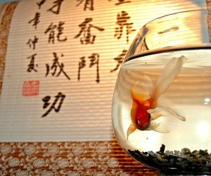

Peceras Y Su Relacion Con El Feng Shui
Beneficios de tener un acuario según el feng shui

Un acuario con enfoque feng shui tiene el potencial de tener muchos beneficios positivos.
Sin embargo, debes colocar y cuidar adecuadamente el acuario para atraer el flujo positivo de energía. Con la colocación, configuración y cuidado correctos, el acuario es una combinación perfecta de armonía y equilibrio.
Beneficios adicionales de un tanque de peces de acuerdo al feng shui
El agua en movimiento en el acuario tiene el poder de revitalizar la energía que estaba estancada o inactiva.
Dónde colocar el acuario

En la práctica del feng shui, es importante colocar un acuario en la ubicación adecuada. Una forma fácil de identificar las áreas apropiadas de tu hogar es mediante un diagrama del bagua.
La sección sureste de tu hogar es la mejor ubicación para un tanque de peces. Esta es el área tradicional que activa la riqueza y la suerte de la prosperidad.
También puedes colocar un acuario en las secciones norte o este de una casa. El norte representa la suerte de la carrera, y el este representa la suerte de la salud.
Coloca un acuario para bloquear el sha chi, o chi negativo, de estructuras exteriores con esquinas afiladas, como una cerca, un puente o esquinas de otra casa.
Un tanque de peces colocado bajo una viga reduce el estrés y la presión mental.
Dónde NO colocar el acuario
Hay algunos lugares donde nunca debes ubicar un acuario. Las reglas del feng shui dictan que la cocina, el dormitorio, el baño y el centro de la casa son lugares poco propicios para los acuarios.
Nunca coloques un tanque de peces en la cocina, ya que el elemento de fuego es fuerte en esta habitación y el agua destruye el fuego.
No coloques un acuario en el dormitorio. La energía yang del agua y los peces nadadores generan demasiada energía yang para un sueño reparador.
No coloques un acuario en el centro de una casa. El elemento tierra gobierna este sector y la tierra destruye el agua. Este conflicto podría crear un conflicto dentro de la familia e interrumpir la abundancia de la familia.
No instales un acuario en un baño. Las aguas residuales generadas en esta sala no son propicias y el acuario aumentará la energía negativa.
5 Elementos De Un Acuario